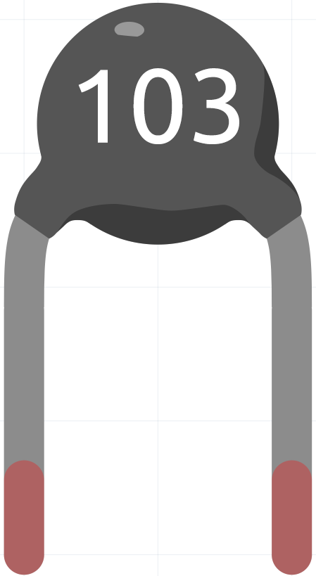

Thermistor
{kind=link}
A Thermistor is a temperature sensitive resistor. When it senses a change in temperature, the resistance of the Thermistor will change. We can take advantage of this characteristic by using a Thermistor to detect temperature intensity. A Thermistor and its electronic symbol are shown below.
Here is the electronic symbol of thermistor.

Thermistors are of two opposite fundamental types:
With NTC thermistors, resistance decreases as temperature rises usually due to an increase in conduction electrons bumped up by thermal agitation from valency band. An NTC is commonly used as a temperature sensor, or in series with a circuit as an inrush current limiter.
With PTC thermistors, resistance increases as temperature rises usually due to increased thermal lattice agitations particularly those of impurities and imperfections. PTC thermistors are commonly installed in series with a circuit, and used to protect against overcurrent conditions, as resettable fuses.
In this kit we use an NTC one. Each thermistor has a normal resistance. Here it is 10k ohm, which is measured under 25 degree Celsius.
Here is the relation between the resistance and temperature:
RT = RN * expB(1/TK – 1/TN)
RT is the resistance of the NTC thermistor when the temperature is TK.
RN is the resistance of the NTC thermistor under the rated temperature TN. Here, the numerical value of RN is 10k.
TK is a Kelvin temperature and the unit is K. Here, the numerical value of TK is 273.15 + degree Celsius.
TN is a rated Kelvin temperature; the unit is K too. Here, the numerical value of TN is 273.15+25.
And B(beta), the material constant of NTC thermistor, is also called heat sensitivity index with a numerical value 3950.
exp is the abbreviation of exponential, and the base number e is a natural number and equals 2.7 approximately.
Convert this formula TK=1/(ln(RT/RN)/B+1/TN) to get Kelvin temperature that minus 273.15 equals degree Celsius.
This relation is an empirical formula. It is accurate only when the temperature and resistance are within the effective range.
Example
Thermistor (Basic Project)